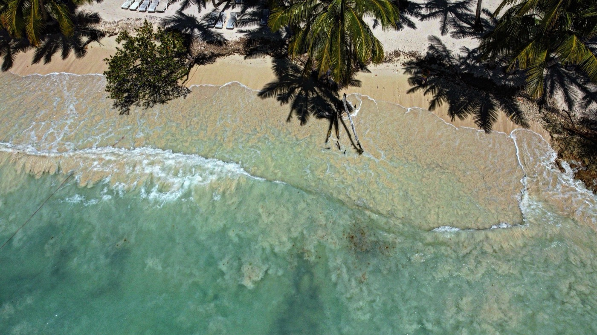

Moving to the Dominican Republic in 2026
A real country rather than a resort strip, with the cheapest living costs in the Caribbean and residency granted in months. Just know which side of the power grid you are buying on.

Quick take
- Cost of livingThe cheapest real option in the Caribbean. Roughly 50 to 60% below the US with rent in.
- ResidencyPermanent from day one via Pensionado ($1,500/mo pension), Rentista ($2,000/mo passive), or Investor ($200K).
- CitizenshipEligible after 2 years, or 6 months on the investor route. Dual nationality allowed.
- TaxTerritorial. Foreign income is exempt for your first three years, lightly taxed after.
- The catchThe national grid collapsed twice between November 2025 and February 2026.
- Best forRetirees and remote earners who want a real country and can plan around infrastructure.
The Dominican Republic is the rare Caribbean destination that is an actual country rather than a curated resort experience. Eleven million people, a real economy, mountains, cities with traffic and universities and problems. That is precisely why it works: you can live well here on a fraction of a US budget, permanent residency is genuinely attainable in months rather than decades, and a second passport opens after two years. The trade-offs are equally real, and one of them got a lot more concrete in the last twelve months.
Is the Dominican Republic safe?
This is the most-asked question about the DR, so here is the direct answer: violent crime against foreign residents is uncommon, and the established expat areas are fine. The State Department rates the country Level 2, the same tier as the Bahamas and Grenada, and notes that Punta Cana, Santo Domingo, and Puerto Plata run safer than the national average.
The everyday risks are not violence. They are phone-snatching, pickpocketing, and motorcycle traffic that obeys physics but very little else. Use ride-hailing apps rather than street taxis, favour gated buildings, and keep your phone in your pocket on the street. Do that and most residents report feeling comfortable.
The electricity problem, which is now the real story
Every guide to the DR mentions power cuts in passing. That undersells what has happened recently.
In November 2025, the national grid suffered its worst collapse since 2015. The system went from serving roughly 3,000 MW of demand to 41 MW available. The cause was human error during line maintenance. Three months later, on 23 February 2026, it happened again: a synchronisation failure at the Punta Catalina plant dropped system frequency to 56 Hz and took the country dark a second time.
The underlying issue is not generating capacity. It is an ageing grid, outdated control software, and technical and non-technical losses averaging 39.2%. Generation is concentrated in a few large thermal units, so a single protection failure becomes a national event.
The detail that should shape where you buy
The February 2026 blackout did not affect Punta Cana or La Romana, because those areas are not on the national grid. Read that sentence twice, because it is worth more than any amount of general advice about the DR.
Where you live in this country determines whether a national grid failure is a news story or your Tuesday. Tourism zones with independent generation rode both events out. Santo Domingo did not.
The builder's read
We build in the tropics, so this is the part we would actually spend money on. In the DR, backup power is not a luxury upgrade, it is a structural requirement, and it is the single biggest quality gap between properties that look identical in listing photos.
What to ask before you sign anything: Is there an inverter bank, and how many hours does it actually carry the air conditioning? Is there a generator, and who pays for its diesel? If it is a condo, does the HOA fee cover generator fuel or is that a surprise assessment? Solar plus battery is increasingly the right answer here and it prices in at build time far more cheaply than retrofit.
What the money looks like
The DR runs roughly 50 to 60% below the United States once rent is included, and is meaningfully cheaper than Puerto Rico or the eastern Caribbean. But the national average hides a lot: Punta Cana and Cap Cana are a different country, financially, from Santiago.
Monthly budgets, in US dollars
Ranges rather than single figures, because that is how these numbers behave in reality. The bottom two rows include rent; the top rows are widely quoted local baselines.
A furnished one-bedroom in Punta Cana runs $700 to $1,100, a two-bedroom $1,000 to $1,500. Basic utilities for an 85 square metre apartment average about $101 a month, though air conditioning will push that considerably. An inexpensive restaurant meal is around $8.
Newcomers get caught by the same four things every time: electricity when you run air conditioning properly, rental deposits that often total three months upfront, condo HOA fees that quietly bundle generator diesel and security, and residency paperwork. On that last one, budget honestly: filing through a competent local attorney typically runs $4,000 to $7,500 all in once you count fees, apostilles, and translations.
Residency, which the DR genuinely grants fast
For a test run you need no advance visa. Most Western nationals get a 30-day tourist card on arrival, usually bundled into the airfare, extendable up to 120 days total. Use it. Spend a rainy season here before you commit to anything.
To stay, there are three fast-track routes, and all three grant permanent residency immediately, skipping the usual five-year temporary track:
- Pensionado: a pension of about $1,500 a month, plus roughly $250 per dependent. Government, military, civil service, or private employer pensions all count, and a properly structured lifetime annuity qualifies.
- Rentista: about $2,000 a month in passive income, plus roughly $250 per dependent.
- Investor: a qualifying investment of about $200,000.
One trap worth naming: active salary income disqualifies both Pensionado and Rentista. These routes are built for pension and passive income. If you are drawing a salary from a foreign employer, talk to an attorney about which category you actually fit before you file.
Under Law 171-07, Pensionado status also carries tax incentives including exemption from import duty on household goods and one vehicle, which is worth real money when you are shipping a container. Most applicants using a competent attorney have a cédula and permanent residency in two to four months. Citizenship becomes possible after two years, or as little as six months on the investor route under Law 1683, and the DR permits dual nationality. There is still no dedicated digital nomad visa.
Tax, property, and doctors
The DR runs a territorial system. Dominican-source income is taxable; foreign-source income is exempt for your first three years of residency and lightly taxed after that. For a retiree or remote earner whose money originates abroad, that is a genuinely favourable structure. Confirm your own situation with a cross-border adviser rather than a blog.
On property, foreigners have the same ownership rights as Dominican citizens, with no restrictions and a straightforward process provided a competent local attorney runs title due diligence. Title irregularities are the main risk here and they are entirely avoidable with the right lawyer.
Private healthcare in Santo Domingo and Santiago is modern, affordable, and full of US-trained bilingual doctors. Routine care and prescriptions cost a fraction of US prices. The public system is much weaker. Carry private or international cover from day one and expect to travel for genuinely complex procedures.
Where people actually end up

- Santo Domingo (Piantini, Naco): the capital. Culture, business, nightlife, and the best hospitals in the country. On the national grid, with everything that implies.
- Punta Cana and Bavaro: resort lifestyle, the most turnkey expat infrastructure, and independent power. Costs more and feels less like the DR.
- Las Terrenas: a Samana beach town with a strong French and Italian community and a genuinely good food scene for its size.
- Cabarete and Sosua: the north coast. Kitesurfing, a long-established international crowd, and lower prices than the east.
Is the Dominican Republic right for you?
- Strong fit if: you want the lowest cost of living in the region, a fast route to permanent residency and a two-year path to a second passport, and a country with actual texture rather than a resort bubble.
- Think hard if: you cannot tolerate bureaucracy or unreliable power, you need English as the default language, or you require world-class specialist care on the island rather than a flight away.
- Either way: Spanish is not optional here in the way it is optional in Panama City. Learning it is the single highest-return thing you can do in your first year.
The DR gives you more country per dollar than anywhere else in the Caribbean. It also asks you to be a slightly more competent adult about infrastructure than a resort island would. Most people who leave within a year leave because they budgeted for the beach and not for the generator.
In the DR, the generator is not an upgrade. It is the house
Two national grid collapses in four months made backup power the single biggest quality difference between properties that photograph identically. SORA designs and builds homes across the tropics, with our deepest roots in Panama and Costa Rica, where residency is straightforward and building costs a fraction of the coastal Caribbean. If the move is really about a place of your own in the sun, it is worth seeing what a fixed-price build looks like before you commit to any one island.
Frequently asked questions
Is the Dominican Republic safe to live in?
For expats living in established areas, yes — violent crime against foreigners is uncommon. The everyday risks are petty theft, motorcycle traffic, and power outages rather than violence. Expat-favored neighborhoods (Piantini and Naco in Santo Domingo, Punta Cana, Cabarete, Las Terrenas, Sosúa) are generally safe with normal urban precautions: use ride-hailing apps, live in gated buildings, and don't flash valuables.
How much does it cost to live in the Dominican Republic in 2026?
Roughly 50 to 60% below the US with rent included. A single person lives locally on $500 to $700 a month before rent, and a comfortable expat lifestyle including rent runs $2,000 to $3,000. Punta Cana costs more: a furnished one-bedroom is $700 to $1,100, and Cap Cana can pass $3,000 a month all in.
How bad are the power cuts in the Dominican Republic?
Worse than most guides admit. The national grid collapsed in November 2025, falling from about 3,000 MW of demand served to 41 MW available, and again on 23 February 2026 after a failure at the Punta Catalina plant. Grid losses average 39.2%. Crucially, Punta Cana and La Romana were unaffected in February because they are not on the national grid, so location and backup power matter enormously.
What visa or residency do I need to move to the Dominican Republic?
Arrive on a 30-day tourist card, extendable to 120 days, to trial the country. To stay, three fast-track routes grant permanent residency immediately: Pensionado (about $1,500 a month in pension), Rentista (about $2,000 a month passive), and Investor (about $200,000). Note that active salary income disqualifies the first two. Expect two to four months and $4,000 to $7,500 all in through an attorney.
Does the Dominican Republic tax foreign income?
The DR uses a territorial tax system. Dominican-source income is taxable, but foreign-source income is exempt for the first three years of residency and lightly taxed thereafter — attractive for retirees and remote earners with income originating abroad. Confirm specifics with a cross-border tax advisor.
Can foreigners buy property in the Dominican Republic?
Yes. Foreign buyers have the same property-ownership rights as Dominican citizens, with no restrictions on foreign ownership. The process is straightforward with a local attorney handling title due diligence, and prices are low by Caribbean standards — one reason the DR is among the region's most active foreign-buyer markets.
Sources & verification
Figures in this guide were checked against primary and authoritative sources on 27 July 2026. Immigration, tax, and cost figures change, so always confirm the current rules with the official body or a licensed professional before acting.
- Dirección General de Migración · official immigration authority; residency under Migration Law 285-04
- Dirección General de Impuestos Internos · official tax authority and territorial tax system
- US State Department · Level 2 travel advisory and entry requirements
- Strategic Energy · February 2026 grid collapse and Punta Catalina failure analysis
- Wise · 2026 Punta Cana cost-of-living figures